SaveMyPaquet L'application mobile pour transporteurs
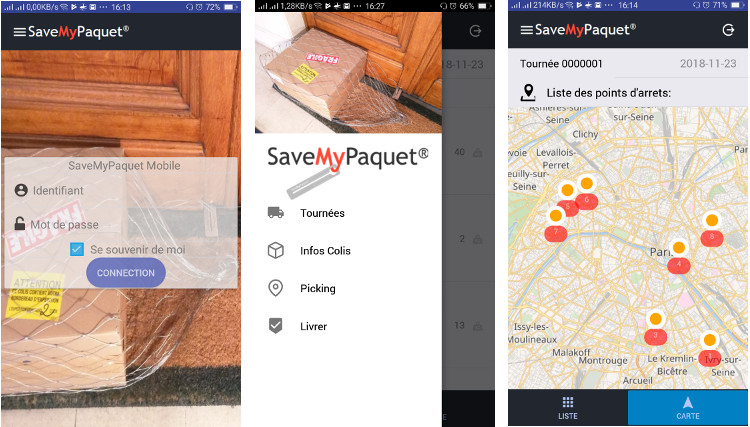
Évolution de la documentation
| Version | Nature des changements | Date |
|---|---|---|
| 1.0 | Création ( Ahmed MAHI - eComTech ) | 14/01/2019 |
Table des matières
1. Présentation
La présente documentation est destiné au transporteurs SaveMyPaquet, elle décrit les fonctionnalités de l'application mobile .
2. Les fonctionnalités de l'application.
-
Recevoir le planning des tournées affectés.
-
Affichage des informations relatifs au deux types de points d’arrêts picking (la collecte) et livraison.
-
Affichage des informations des colis et clients par simple scan des code-barres ou via les détails des points d’arrêt.
-
Effectuer la collecte regroupé ( picking ) via le scan des code-barres.
-
Intégration Waze© pour obtenir les meilleurs itinéraires en temps réel.
-
Intégration de simple sms et appel direct,
-
Validation de livraison via le scan du code-barre.
-
Prise de photos pour la preuve de Livraison.
3. Installation de l'application
L'application est disponible sur Google Play, donc une simple recherche du mot "SaveMyPaquet" vous permet de trouver l’application sur le store, et il suffit de cliquer sur "INSTALLER"
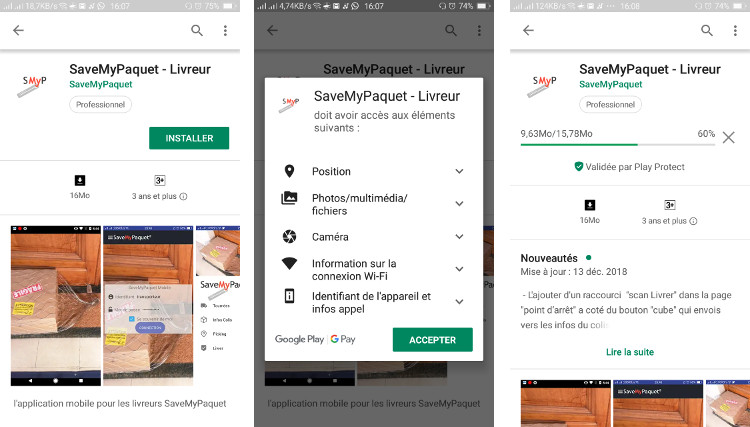
4. Utilisation.
4.1 Lancement de l'application
L’application est désormais installée, ouvrir l'application, un message va vous demander d'accepter l'utilisation du GPS, cliquez sur Accepter et cocher "Jamais demander" pour ne pas recevoir le message a chaque utilisation du gps.

4.2 Identification.
Entrez ensuite votre login et mot de passe.
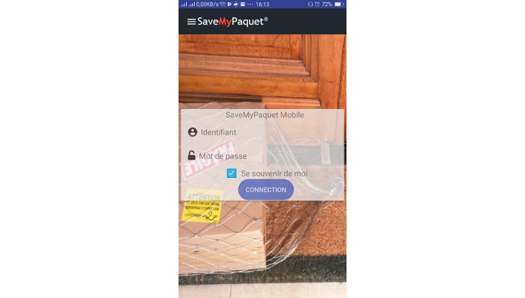
4.3 Visualisation du planning des tournées.
4.3.1 Tournées.
Une fois connecté vous pouvez visualiser la liste des tournées le nombre de livraison pour chaque tournée ainsi que le statut de chaque tournée.
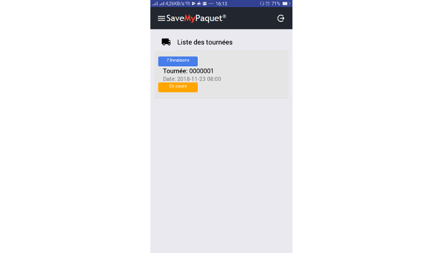
Pour voir les détails de chaque tournée il suffit de cliquer sur la tournée en question, les points d’arrêts corresponds a chaque tournée se pressentent en deux versions sous forme de liste et sur une carte,
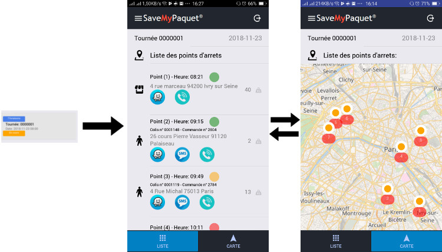
Vous pouvez naviguer entre les deux écrans en cliquant sur les deux boutons en bas.
et 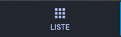
4.3.2 Points d’arrêt.
Le schéma ci-dessous explique l'ensemble des informations représentés sur chaque point d’arrêt du listing
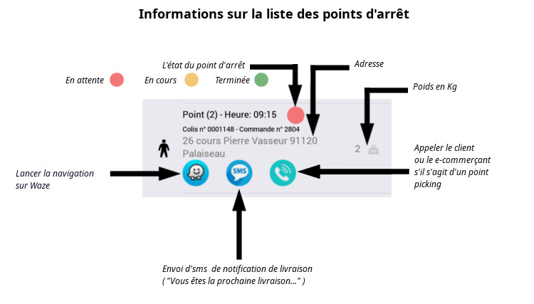
Il existe deux types de points d’arrêt :
- Points d’arrêt "Picking" ( ramassage des colis ) représenté par l’icône
- Points d’arrêt "Livraison" représenté par l’icône
Lorsque on clique sur un point d’arrêt on retrouve plus au moins les même informations dans le listing plus la carte, un lien pour les scans et un lien vers les détails du colis ( bien-sur uniquement pour les points d’arrêt de type "Livraison" )
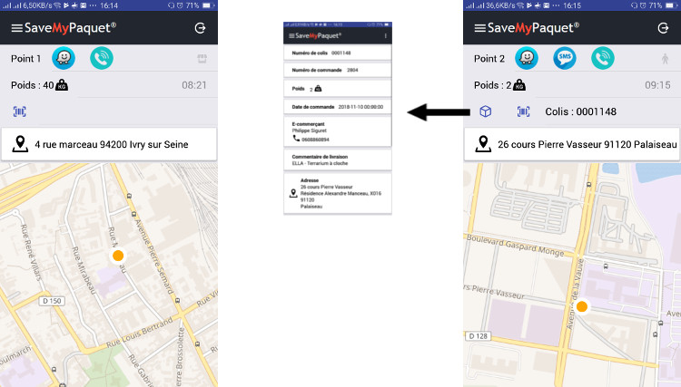
A noté que l’heure représente l’heure d'arrivé calculé / estimé sur le point en question
4.3.3 Colis.
À tout moment vous pouvez utiliser le menu de navigation a gauche et via le lien "Infos Colis" faire des scans des codes-barre pour avoir toute les détails des colis.
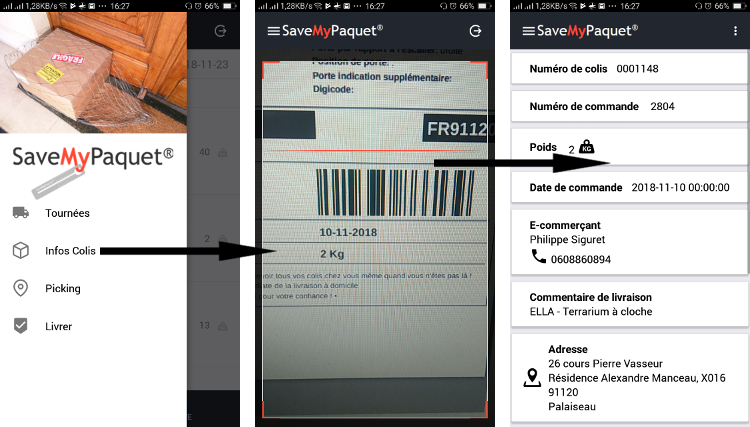
4.4 La collecte des colis sur les points d’arrêt "Picking"
Pour les points d’arrêt "Picking" Le bouton scan envoi vers l'écrans de scan regroupé des code barres des colis lors du ramassage.
Chaque colis est représenté par un icône plus son numéro.
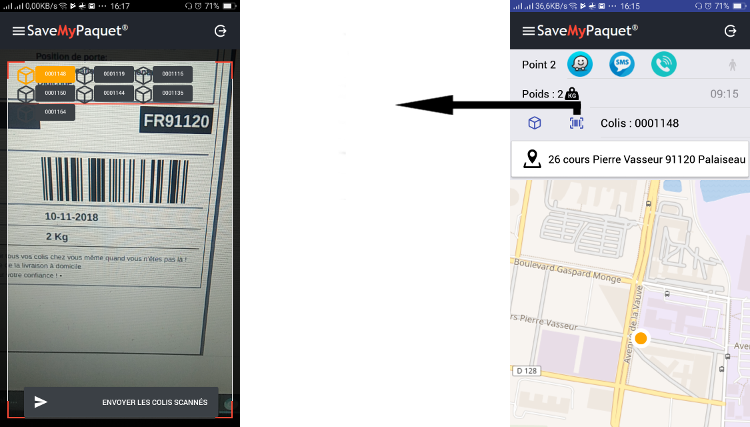
Chaque scan réussi d'un code-barre change la couleur en oronge de l’icône du colis en question, cela permet de contrôler en temps réel tout les colis du points d’arrêt en question.
Une fois que l'ensemble ( ou une partie ) des colis est scanés, pour valider il suffit de cliquer sur le bouton en bat "ENVOYER LES COLIS SCANNES"
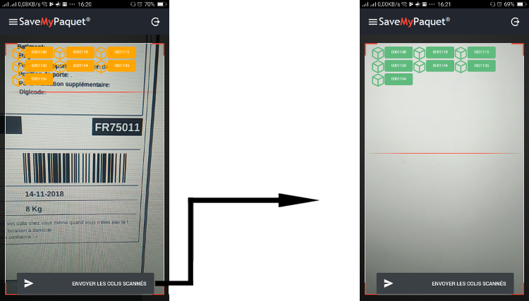
Les colis validé ( ramassage envoyé vers le système) change la couleur en vert
Vous pouvez aussi utiliser le menu a gauche et cliquer sur "Picking" pour valider le ramassage de n'importe quel colis sans passer par son point d’arrêt.
4.5 Validation des Livraisons
Pour valider la livraison d'un colis, il faut soit utiliser le menu et cliquer sur "Livrer" soit dans le détail du point d’arrêt ( de type livraison ) correspond au colis, cliquer sur le bouton , un résumé de colis s'affiche, ainsi qu'un boutton vous invite à prendre une photo dès que le code barre est scané
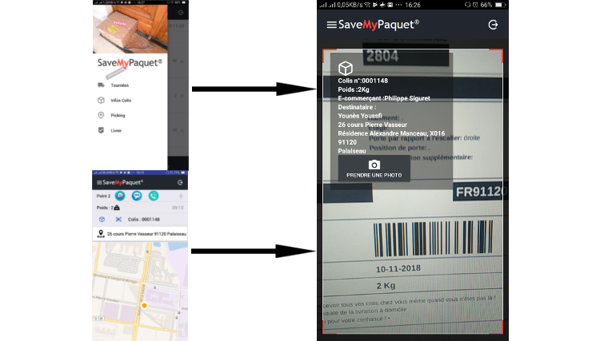
Cliquez sur le bouton "PRENDRE UNE PHOTO" pour pouvoir prendre la photo du preuve du livraison,
A noté que jusqu'a maintenant vous n'avez pas valider la livraison
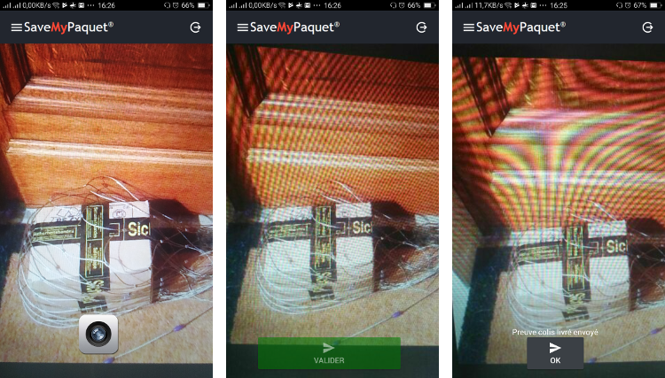
Ensuite il suffit de prendre la photo du preuve du livraison et cliquer sur le bouton en vert "Valider"; un message va s’afficher pour vous informer que la preuve est bien envoyé et la livraison est validé.
| Document réalisé par Ahmed MAHI - eComTech | Consultant Technique Web, E-commerce Et Mobile |